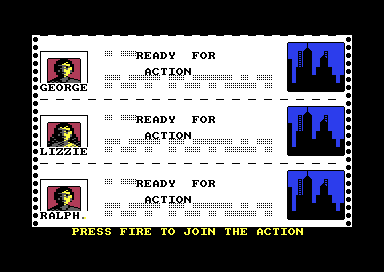
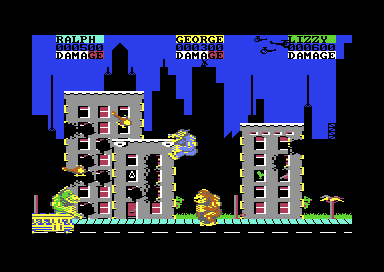

<meta charset="utf-8">
<meta name="viewport" content="width=device-width, initial-scale=1">
<title>Rampage</title>
<link rel="preconnect" href="https://fonts.googleapis.com">
<link rel="stylesheet" href="https://fonts.googleapis.com/css2?family=Lato:wght@400;700;900&family=IBM+Plex+Mono:wght@400;500&display=swap">
<style>
:root{
  --bg:#23262d; --paper:#e9e7e1; --surface:#ffffff; --surface-2:#f1efea; --line:#d5d3cc; --line-soft:#e0ded8;
  --ink:#2f3136; --ink-soft:#55585f; --ink-mute:#80838a;
  --link:#1f5fa8; --link-hover:#154480; --accent:#1f5fa8;
  --amber:#c25a00; --cyan:#1f5fa8; --coral:#d04a3a; --green:#2a8a4a; --violet:#4a5bd6; --hl:#fff0c2;
  --chip:#2f3136; --chip-ink:#ffffff;
  --c64blue:#40318d; --c64grey:#686868;
  --fd:'Lato',system-ui,sans-serif; --fb:'Lato',system-ui,sans-serif; --fm:'IBM Plex Mono',ui-monospace,Menlo,monospace;
  --col:1080px; --gx:68px; --fs:17px; --lh:1.6; --hw:900; --h1:46px; --h2:26px; --sy:48px; --pp:26px; --r:10px;
  --plate-shadow:0 1px 2px rgba(0,0,0,.05),0 4px 14px rgba(0,0,0,.05);
}
*{box-sizing:border-box}
html{background:var(--bg);min-height:100%}
body{background:var(--paper);color:var(--ink);font-family:var(--fb);font-size:var(--fs);line-height:var(--lh);max-width:var(--col);margin:0 auto;min-height:100vh;padding:0 0 4rem}
h1,h2,h3{font-weight:var(--hw);letter-spacing:-.01em;text-wrap:balance;color:var(--ink);margin:0}
.wrap{padding:0 var(--gx)}
.hero{padding:48px var(--gx) 8px;text-align:left}
.eyebrow{font-family:var(--fm);font-size:12px;letter-spacing:.08em;text-transform:uppercase;color:var(--ink-mute);margin:0 0 10px}
.hero h1{font-size:var(--h1);line-height:1.15;letter-spacing:-.02em;margin:0 0 14px}
.hero .sub{margin:0 0 .6em;color:var(--ink-soft)}
section{padding:var(--sy) 0 24px}
section:last-of-type{border-bottom:none}
.fig{font-family:var(--fm);font-size:12px;letter-spacing:.08em;text-transform:uppercase;color:var(--ink-mute);margin:0 0 10px}
h2.t{font-size:var(--h2);margin-bottom:12px}
.lede{color:var(--ink-soft);margin:0 0 30px}
.plate{background:var(--surface);border:1px solid var(--line);border-radius:var(--r);padding:var(--pp);box-shadow:var(--plate-shadow)}
.cap{font-size:14px;color:var(--ink-mute);margin-top:14px;line-height:1.55}
.cap b{color:var(--ink);font-weight:700}
code{font-family:var(--fm);font-size:.82em;background:var(--chip);color:var(--chip-ink);border-radius:4px;padding:2px 6px;overflow-wrap:break-word;-webkit-box-decoration-break:clone;box-decoration-break:clone}
.plate{margin:22px 0;overflow-x:auto}
.plate canvas,.plate img{max-width:100%;height:auto;display:block}
.rp-row{display:flex;flex-wrap:wrap;gap:18px;align-items:flex-start}
.rp-bar{display:flex;flex-wrap:wrap;gap:10px 16px;align-items:center;margin:0 0 14px;font-size:15px}
.rp-bar label{display:inline-flex;gap:6px;align-items:center}
.rp-bar select,.rp-bar button,.rp-bar input[type=range]{font:inherit}
.rp-bar button{padding:4px 12px;border:1px solid var(--line);border-radius:6px;background:var(--surface-2);cursor:pointer}
.rp-bar button[aria-pressed=true]{background:var(--chip);color:var(--chip-ink)}
.rp-out{font-family:var(--fm);font-size:13px;color:var(--ink-soft);margin:10px 0 0;min-height:1.4em}
.rp-tab{border-collapse:collapse;font-size:15px;margin:6px 0}
.rp-tab th,.rp-tab td{border-bottom:1px solid var(--line-soft);padding:5px 12px 5px 0;text-align:left;vertical-align:middle}
.rp-tab th{font-size:12px;font-family:var(--fm);text-transform:uppercase;letter-spacing:.06em;color:var(--ink-mute);font-weight:500}
.rp-tab td.n{font-family:var(--fm);font-size:13px}
.rp-pics{display:flex;flex-wrap:wrap;gap:16px}
.rp-pics figure{margin:0;flex:1 1 300px}
.rp-pics img{width:100%;image-rendering:pixelated;border-radius:6px}
.rp-pics figcaption{font-size:14px;color:var(--ink-mute);margin-top:6px}
.rp-sheet{display:flex;flex-wrap:wrap;gap:12px}
.rp-sheet figure{margin:0;text-align:center;font-family:var(--fm);font-size:11px;color:var(--ink-mute)}
.rp-sheet canvas{margin:0 auto 4px;background:#3b3f48;border-radius:4px}
.rp-miss{font-size:14px;color:var(--ink-mute);font-style:italic}
@media (max-width:700px){:root{--gx:16px;--h1:34px;--h2:22px;--pp:14px}}
</style>
<!-- tabs -->
<header class="hero">
  <p class="eyebrow">1987 · Activision</p>
  <h1>Rampage</h1>
  <p class="sub">Three monsters punch a city flat while the army shoots at them. The game-over screen says "you must eat food to survive", and in this version eating does nothing at all.</p>
</header>
<main class="wrap">

<section id="game">
  <p class="fig">01 · The game</p>
  <h2 class="t">Three monsters and a city to knock down</h2>
  <p class="lede">Rampage is the Commodore 64 version of Bally Midway's 1986 arcade game, converted by Catalyst Coders and published by Activision in Europe in 1987. The second loading picture credits M. Archer, D. Jolliff, M. Jones, and D. Wainwright.</p>
  <div class="plate"><div class="rp-pics">
    <figure><figcaption>The newspaper screen before each level. A fire button joins the game.</figcaption></figure>
    <figure><figcaption>The first level, with all three monsters on screen.</figcaption></figure>
  </div></div>
  <p>Three people have been turned into monsters: George the gorilla, Lizzie the lizard, and Ralph the wolf. Up to three players take one each, two with joysticks and one on the keyboard, and the computer plays any monster nobody joined as. All three are always on the screen.</p>
  <p>A level is one screen of buildings. A monster walks along the street, climbs a building's side, and punches the wall while it hangs there. Every punch that breaks something scores 100 points and weakens the building, and a building that has taken enough punches crumbles to the ground. When every building is down, the next level begins.</p>
  <p>The army fights back. Soldiers lean out of the holes the monsters make and shoot, a helicopter fires as it dives, and a fall costs energy at every step. Each monster's energy is shown by the word <code>DAMAGE</code> under its score, which turns red a letter at a time. A monster with no energy left shrinks back into a human and walks off the screen.</p>
</section>

<section id="music">
  <p class="fig">02 · Music</p>
  <h2 class="t">Music: one tune plays on every text screen</h2>
  <p class="lede">There is no music during play. The tune belongs to the screens between levels.</p>
  <div class="plate"><div id="rp-sid"></div>
  <p class="cap">The page runs <b>the game's own music player</b>, the code at <code>$0200</code>-<code>$0575</code> with its tunes, on the site's 6502 and plays what it writes through the site's model of the sound chip. A test compares every write with the same calls made on the game's whole memory, frame by frame, for 7,500 frames of the first button and to the end of the second. The first tune repeats after 6,912 frames, about two minutes and eighteen seconds. It sets a low-pass filter, which the player models on a 6581 chip; real chips differ from each other in how the filter sounds.</p></div>
  <p>The driver is called once a frame, 50 times a second, by the interrupt routine the text screens use (<code>$AD3B</code>). Each of the sound chip's three voices reads its own list of bytes. Most of the list is pairs: a length, then a note. A length is a number from 1 to 12 that picks a duration from a table (<code>$0233</code>), and a note packs a pitch from 1 to 12 with an octave. Bytes of <code>$80</code> and over are commands that repeat a passage or write straight to the chip.</p>
  <p>The game asks for three different tunes: the first for the game-over screen, the second for the list of things to eat, and the third for the newspaper. Every one of those requests gets the first tune, and the player's second button plays what is left of the second. <a href="discoveries.html#tune">Discoveries</a> has the reason.</p>
</section>

<section id="sound">
  <p class="fig">03 · Sound</p>
  <h2 class="t">Sound: every effect is a single burst of noise</h2>
  <p class="lede">The game has five sound effects and starts three of them.</p>
  <div class="plate"><div id="rp-sfx"></div>
  <p class="cap">Each button calls the game's own <code>$822F</code> with the effect and the voice the game uses for it, on the site's 6502, and plays what it writes. The game writes to the chip once for each effect and never again, so the sound fades at the rate its envelope sets. The punch takes many seconds to fade, and in the game the next effect on the same voice cuts it off; a button here stops after three seconds. The same test as the music's compares every write with the game's code.</p></div>
  <p>An effect is eight bytes in a table at <code>$82EC</code>: a pitch, a length, a waveform, a filter setting, an envelope, and a figure to slide the pitch by. Four of the five are noise and the last is a plain tone. Starting an effect writes the pitch, the waveform and the envelope to one voice of the chip and switches the filter on.</p>
  <p>The length and the slide are never used. The routine that would count an effect down, slide its pitch and stop it exists at <code>$82AC</code>, and nothing calls it. <a href="discoveries.html#sfx">Discoveries</a> plays the effects with that routine running.</p>
</section>

<section id="frame">
  <p class="fig">04 · One frame</p>
  <h2 class="t">One frame, rebuilt from memory</h2>
  <p class="lede">The page draws this picture from a recording of the video chip's registers and the memory they point at.</p>
  <div class="plate">
    <div class="rp-bar"><button type="button" id="rp-frame-marks" aria-pressed="false">Show what the sprites are doing</button></div>
    <canvas id="rp-frame" width="768" height="544" aria-label="One frame of play, drawn from memory"></canvas>
    <p class="rp-out" id="rp-frame-out"></p>
    <p class="cap">One frame of play, recorded in the emulator and drawn again by this page. Every one of its 104,448 pixels matches the emulator's own picture of the frame. George and Lizzie stand on a roof, Ralph is in the street beside a tank, and one helicopter crosses the status lines.</p>
  </div>
  <p>The C64 can show eight sprites, movable pictures 24 pixels wide and 21 tall. This frame shows fourteen sprite-sized pieces. Each monster is 48 pixels wide and 48 tall, which is two sprites side by side and more than two sprites high, and on top of the three monsters come two helicopters in the status lines, two more among the buildings, and a vehicle in the street.</p>
  <p>The game gets there by giving each sprite several jobs in one frame. The video chip draws the screen from the top down, and the program can ask to be interrupted when the drawing reaches a chosen line. Sprites 0 and 1 are the helicopters in the status lines at the top of the screen, the two helicopters among the buildings from about a quarter of the way down, and the two halves of the street vehicle at the bottom. Sprites 2 to 7 are the three monsters, a pair for each, and every pair is moved down twice while the frame is drawn so that it covers the monster's whole height.</p>
  <p>The interrupts that move the pairs are sorted afresh every frame. At the bottom of the picture a routine (<code>$7B4A</code>) works out the nine lines at which a pair must move, three for each monster, puts them in order from the top, and writes each line into the code of one of nine small handlers (<code>$7979</code> is the first). When two lines are within two of each other, the first handler jumps straight into the second, so one interrupt does both jobs. In this frame George and Lizzie are level, and three interrupts serve the two of them.</p>
  <p>The background is characters, the C64's 8 by 8 pixel tiles. The three status lines use one character set and the city another, switched by a timer about 73 lines down the frame. Black is the background colour, so the dark skyline is empty space and the blue sky is a solid blue character.</p>
</section>

<section id="monster">
  <p class="fig">05 · The monsters</p>
  <h2 class="t">A monster is 36 tiles copied into six sprites</h2>
  <p class="lede">The monsters are too big to store as sprites, so the game stores them as tiles and builds the sprites while it runs.</p>
  <div class="plate">
    <div class="rp-bar">
      <label>Character <select id="rp-mon-who"><option value="0">George</option><option value="1">Lizzie</option><option value="2">Ralph</option></select></label>
      <label>Facing <select id="rp-mon-face"><option value="0">left</option><option value="1">right</option></select></label>
      <label>Frame <input type="range" id="rp-mon-frame" min="0" max="37" value="8"></label>
      <button type="button" id="rp-mon-rows" aria-pressed="true">Show the three rows of sprites</button>
    </div>
    <div class="rp-row"><canvas id="rp-mon-tiles" width="336" height="344" aria-label="The frame's 36 tiles"></canvas><canvas id="rp-mon-pic" width="288" height="288" aria-label="The picture the six sprites show"></canvas></div>
    <p class="rp-out" id="rp-mon-out"></p>
    <p class="cap">Left: the frame's 36 tile numbers, each drawn from the character's own set of 256 tiles. Right: the picture as the six sprites show it. The page runs the game's own <code>$B3F6</code> and <code>$B520</code> on the site's 6502 to build it. A test checks all 228 pictures against the tiles they are built from.</p>
  </div>
  <p>A frame of a monster is a list of 36 tile numbers, six rows of six. A tile is eight bytes, a strip 8 pixels wide and 8 tall, so the whole picture is 48 by 48. Each character has 38 frames facing left and 38 facing right, and a set of 256 tiles for each facing (<code>$4000</code>-<code>$6FFF</code>). Stored as finished sprites, the six tables of frames would need 65,664 bytes, more than the machine has. Stored as tile numbers and tiles, they take 20,496.</p>
  <p>Whenever a monster has moved, <code>$B3F6</code> copies its frame's 36 tiles into a buffer of 288 bytes. Once a frame, the interrupt at the top of the screen copies one monster's buffer into its six sprite shapes, a different monster each frame, so each monster's picture is refreshed every third frame. The copying routine has no loop: it is 288 loads and 336 stores written out one after another, three times over, once for each monster, and those three routines take 5,619 bytes.</p>
  <p>The picture is 48 lines tall and a sprite is 21, so each pair of sprites is shown three times down the monster's height. The interrupt that moves a pair down and gives it its next shapes cannot land on an exact line, and the game hides the join by storing the lines around it twice: the last four lines of each row are in the shape above the join and in the shape below it, at the same height. Whichever shape the chip is reading when it draws those lines, the picture is the same.</p>
  <p>Every shape for every character is on the <a href="graphics.html">Graphics</a> tab.</p>
</section>

<section id="building">
  <p class="fig">06 · The buildings</p>
  <h2 class="t">A building is a grid of blocks, and a punch rewrites one block</h2>
  <p class="lede">Click a wall or a window to punch it, as a monster hanging on the building would.</p>
  <div class="plate">
    <div class="rp-bar">
      <label>Level <select id="rp-city-level"></select></label>
      <button type="button" id="rp-city-reset">Rebuild the level</button>
    </div>
    <canvas id="rp-city" width="640" height="400" style="cursor:crosshair" aria-label="A level, drawn by the game's own code; click a building to punch it"></canvas>
    <p class="rp-out" id="rp-city-out"></p>
    <p class="cap">The page runs the game's own code on the site's 6502: the routines that set a level up, draw it, change a block for a punch (<code>$A62F</code>) and bring a building down (<code>$B281</code>). The monsters, the soldiers, and the things in the windows are left out. A building that has no strength left falls at the game's own speed of about 4.8 passes a second.</p>
  </div>
  <p>A building is stored as a small map of block numbers. A block is four characters, two by two (<code>$3C10</code>), and there are blocks for a wall, each half of a window, a roof edge, and a door. Six building shapes exist (<code>$9A0D</code>), between four and five blocks wide and from six to fourteen rows of characters tall. A level copies the shapes it uses into working maps at <code>$7500</code>, and the whole screen is drawn again from those maps on every pass of the game, about five times a second.</p>
  <p>A punch looks up the block it lands on in a table of 128 entries (<code>$A73F</code>). The entry says what the block becomes: a window half becomes its broken form, a piece of wall becomes one of four holes, and some blocks, such as most of the roof, do not change. A new hole joins up with a hole in the block above it. Each punch that changes a block takes one from the building's strength and scores 100 points.</p>
  <table class="rp-tab" id="rp-types"></table>
  <p>At strength 0 the building crumbles for 15 passes and then sinks a row at a time. While it falls, each block number has 100 added to it, which is the same block in its ruined form. Only a punch thrown while climbing reaches a building. A punch from the street is tested against the other monsters, the helicopters, and the vehicle.</p>
  <p>Punching the first or the second building flat here also shows a slip: the whole picture is left a few pixels to the right. <a href="discoveries.html#shake">Discoveries</a> explains it.</p>
</section>

<section id="levels">
  <p class="fig">07 · The levels</p>
  <h2 class="t">A level is a list of buildings and the columns they stand in</h2>
  <p class="lede">The game has 20 levels, and each is described by a handful of bytes.</p>
  <div class="plate"><table class="rp-tab" id="rp-level-tab"></table>
  <p class="cap">The first level's two lists, read from <code>$A48E</code> and <code>$A462</code>: three buildings, each a shape and the screen column of its left edge.</p></div>
  <p>Two tables hold an address for each level. One address leads to a list of building shapes and the other to a list of screen columns. The level's number also picks its colours from two tables of sixteen (<code>$9DC1</code>, <code>$9DD0</code>), which is why the same six shapes look like different buildings from level to level. Levels 5 to 8 and 13 to 16 swap the city skyline for hills.</p>
  <p>After level 20 the game goes back to the first. The <a href="levels.html">Levels</a> tab draws all twenty.</p>
</section>

<section id="energy">
  <p class="fig">08 · Energy</p>
  <h2 class="t">The word DAMAGE is the energy bar</h2>
  <p class="lede">Each monster starts with 56 units of energy. Slide a monster's energy down and watch its word.</p>
  <div class="plate">
    <div class="rp-bar">
      <label>George <input type="range" id="rp-en-0" min="0" max="56" value="56"></label>
      <label>Lizzie <input type="range" id="rp-en-1" min="0" max="56" value="56"></label>
      <label>Ralph <input type="range" id="rp-en-2" min="0" max="56" value="56"></label>
    </div>
    <canvas id="rp-energy" width="960" height="72" aria-label="The three status lines"></canvas>
    <p class="rp-out" id="rp-en-out"></p>
    <p class="cap">The status lines as the game's own code draws them (<code>$9C62</code> colours the letters and <code>$994A</code> prints them), run on the site's 6502 with the energy the sliders give. At 0 the page runs the game's routine for a monster that has just lost its last unit (<code>$9B9B</code>).</p>
  </div>
  <p>The manual promises energy bars. The game colours a word instead: the energy divided by 8, plus one, is the number of letters shown in white from the left, and the rest are red. With six letters in <code>DAMAGE</code>, the word stays white down to 40 and then loses a letter for every 8 units.</p>
  <p>Damage arrives as flags. A bullet, each step of a fall, each step of being knocked back by another monster, and standing in a hole in the road all set a monster's "hit" flag. Once a pass the game looks at the flag, and every second time it finds the flag set it takes one unit of energy. Several hits in the same pass count as one.</p>
  <p>Nothing gives energy back. Sliding George to 0 with Lizzie above 0 shows one of the game's slips, which is in <a href="discoveries.html#red">Discoveries</a> with the others about energy.</p>
</section>

<section id="helicopters">
  <p class="fig">09 · Helicopters</p>
  <h2 class="t">The helicopters fly eight fixed routes</h2>
  <p class="lede">Each helicopter among the buildings follows a script: a kind of move and a number of frames, over and over.</p>
  <div class="plate">
    <div class="pick"><button type="button" class="step" data-d="-1" aria-label="The route before">‹</button><select id="rp-path-sel" aria-label="Route"></select><button type="button" class="step" data-d="1" aria-label="The route after">›</button></div>
    <canvas id="rp-path" width="768" height="544" aria-label="A helicopter flying one of its routes over the first level"></canvas>
    <p class="rp-out" id="rp-path-out"></p>
    <p class="cap">The route is read from the game's tables (<code>$8D48</code>, <code>$8D21</code>) and flown at the game's speed, 50 steps a second, over the first level. The dotted line is the whole route. A test flies every route with the game's own code and compares the position and the shape at each frame.</p>
  </div>
  <p>Two helicopters share the eight routes, each picking one at random when it has finished the last. A route starts off one edge of the screen and is a list of pairs: one of eight kinds of move, and the number of frames to keep it up. A move is a step across, a step down, and the picture to show, so "left and down" is a dive with the nose-down picture. The second helicopter starts 20 pixels higher than the route says, so the two do not fly on top of each other.</p>
  <p>The first helicopter fires a bullet while it is diving. The second never fires. A punch that lands near either one sends it down a ninth route, the explosion, from wherever it is.</p>
</section>

<section id="vehicles">
  <p class="fig">10 · The street</p>
  <h2 class="t">The street vehicle is drawn from a list of sixteen</h2>
  <p class="lede">When the street is empty the game picks the next vehicle at random.</p>
  <div class="plate"><table class="rp-tab" id="rp-veh"></table>
  <p class="cap">The sixteen entries of the vehicle tables (<code>$8CC7</code>-<code>$8D06</code>), each drawn from its two sprite shapes. A step is 2 pixels a frame.</p></div>
  <p>A vehicle is two sprites side by side: a car, a tram, or a tank. Each entry in the list gives the picture, the edge of the screen it starts from, and its speed. A monster in the street can punch downwards at one. A car or a tank is wrecked, and a tram drives away faster. Vehicles do no harm to a monster.</p>
  <p>The last entry in the list is a mistake, and so is the second picture of every wreck. Both are in <a href="discoveries.html#car">Discoveries</a>.</p>
</section>

<section id="computer">
  <p class="fig">11 · The computer's monsters</p>
  <h2 class="t">A monster nobody plays presses buttons at random</h2>
  <p class="lede">The computer steers its monsters by pressing the same five controls a player has.</p>
  <div class="plate">
    <div class="rp-bar"><button type="button" id="rp-ai-go">Let the game's routine decide 1,000 times</button></div>
    <table class="rp-tab" id="rp-ai"></table>
    <p class="cap">The button runs the game's own routine (<code>$B380</code>) a thousand times on the site's 6502, with the game's random number routine, and counts what it pressed.</p>
  </div>
  <p>Once each pass the routine draws a random number for each monster it steers. About 6 times in 256 it lets go of every direction and presses fire, which is a jump on the street and lets go of a wall. About 50 times in 256 it chooses new directions: left or right evenly, and up three times in four. The rest of the time it leaves the directions as they were. Fire is pressed about two times in nine, and fire with a direction is a punch.</p>
  <p>The routine never looks at the screen. A computer monster climbs because "up" beside a building starts a climb, and it damages buildings because fire while climbing is a punch. With nobody playing, the game runs as a demonstration in which the monsters cannot lose energy.</p>
</section>

</main>
<script type="application/json" id="rp-frame-data">{"schema":1,"standard":"PAL","lines":312,"cycles":63,"about":"","vic":[74,51,246,53,88,171,112,171,120,171,144,171,212,253,236,253,0,27,0,0,0,255,216,0,217,247,241,0,252,0,255,255,240,240,242,252,247,247,251,240,240,248,248,245,245,254,254],"cia2":[148,63],"cpu":[47,53],"writes":[[0,31,53272,219,219],[2,9,53253,108,108],[2,13,53255,108,108],[2,19,53257,108,108],[2,23,53259,108,108],[2,29,53261,190,190],[2,33,53263,190,190],[2,39,63482,202,202],[2,43,64506,202,202],[2,49,63483,203,203],[2,53,64507,203,203],[3,3,63484,240,240],[3,7,64508,240,240],[3,13,63485,241,241],[3,17,64509,241,241],[3,23,63486,246,246],[3,27,64510,246,246],[3,33,63487,247,247],[3,37,64511,247,247],[46,7,65534,121,121],[46,13,65535,121,121],[76,11,53272,217,217],[76,17,53276,255,255],[76,23,53287,248,8],[76,27,53288,248,8],[76,33,53264,3,3],[76,39,53248,4,4],[76,45,53249,180,180],[76,51,53250,162,162],[76,57,53251,150,150],[76,63,63480,65,65],[77,4,64504,65,65],[77,10,63481,81,81],[77,14,64505,81,81],[126,30,53253,129,129],[126,34,53255,129,129],[126,40,63482,204,204],[126,44,64506,204,204],[126,50,63483,205,205],[126,54,64507,205,205],[127,11,53257,129,129],[127,15,53259,129,129],[127,21,63484,242,242],[127,25,64508,242,242],[127,31,63485,243,243],[127,35,64509,243,243],[127,45,65534,225,225],[143,30,53253,150,150],[143,34,53255,150,150],[143,40,63482,206,206],[143,44,64506,206,206],[143,50,63483,207,207],[143,54,64507,207,207],[144,11,53257,150,150],[144,15,53259,150,150],[144,21,63484,244,244],[144,25,64508,244,244],[144,31,63485,245,245],[144,35,64509,245,245],[144,45,65534,73,73],[144,51,65535,122,122],[158,32,53253,171,171],[158,36,53255,171,171],[158,42,63482,252,252],[158,46,64506,252,252],[158,52,63483,252,252],[158,56,64507,252,252],[159,15,53257,171,171],[159,19,53259,171,171],[159,25,63484,252,252],[159,29,64508,252,252],[159,35,63485,252,252],[159,39,64509,252,252],[159,49,65534,177,177],[208,32,53261,211,211],[208,36,53263,211,211],[208,42,63486,248,248],[208,46,64510,248,248],[208,52,63487,249,249],[208,56,64511,249,249],[209,3,65534,229,229],[217,26,53248,250,250],[217,32,53250,226,226],[217,38,53249,228,228],[217,42,53251,228,228],[217,48,53264,0,0],[217,54,63481,116,116],[217,58,64505,116,116],[218,1,63480,117,117],[218,12,64504,117,117],[218,18,53287,246,6],[218,22,53288,246,6],[225,35,53261,232,232],[225,39,53263,232,232],[225,45,63486,250,250],[225,49,64510,250,250],[225,55,63487,251,251],[225,59,64511,251,251],[226,13,65534,25,25],[226,19,65535,123,123],[240,31,53261,253,253],[240,35,53263,253,253],[240,41,63486,252,252],[240,45,64510,252,252],[240,51,63487,252,252],[240,55,64511,252,252],[241,4,65534,74,74],[249,38,53276,252,252],[280,48,53287,240,0],[280,52,53288,240,0],[280,58,53249,51,51],[281,1,53251,53,53],[282,14,63480,90,90],[282,18,64504,90,90],[282,24,63481,98,98],[282,28,64505,98,98],[282,34,53248,74,74],[282,40,53250,246,246],[288,5,65534,154,154],[288,11,65535,120,120]],"colour":"BgYGBwcHBwcHBgYGBgYGBgYGBQUFBQUFBgYGBgYGBgYDAwMDAwMGBgYGBgYGBgYGBgYGBgYGBgYGBgYGBgYGBgYGBgYGBgYGBgYGBgYGBgYGBgYBAQEBAQEGBgYGBgYGBgYBAQEBAQEGBgYGBgYGBgEBAQEBAgYGBgYGBgYGBgYGBgYGBgYGBgYGBgYGBgYGBgYGBgYGBgYGBgYGBgYGBgYGBgYGBgYGBgYGBgYGBgYGBgYGBgYGBgYGBgYGBgYGBgYGBgYGBgYGBgYGBgYGBgYGBgYGBgYGBgYGBgYGBgYGBgYGBgYGBgYGBgYGBgYGBgYGBgYGBgYGBgYGBgYGBgYGBgYGBgYGBgYGBgYGBgYGBgYGBgYGBgYGBgYJCQkJCQkJCQkJBgYGBgYGBgYGBgYGBgYGBgYGBgYGBgYGBgYGBgYGDwkJCQkJCQkJDwYGBgYGBgYGBgYGBgYGBgYGBgYGBgYGBgYGBgYGBg8PCQkJCQ8PCQ8GBgYGBgYGBgYGBgYGBgYGBgYGBgYGBgYGBgYGBgYPCQkJCQkPDwkPBgYGBgYGBgYGBgYGBgYGBgYGBgYGBgYGBgYGBgYGDw8JCQkJDwkJDwYGBgYGBgYGBgYGBgkJCQkJCQkJBgYGBgYGBgYGBg8JCQkJCQkJCQ8GBgYGBgYGBgYGBgYPCQkJCQkJDwYGBgYGBgYGBgYPDwkJCQkJCQkJCQkJCQYGBgYGBgYGDw8JCQ8JCQ8GBgYGBgYGBgYGDwkJCQkJDwkJCQkJCQ8GBgYGBgYGBg8JCQkJCQkPBgYGBgYGBgYGBg8PCQkJCQ8PCQkPCQkPBgYGBgYGBgYPDwkJDwkJDwYGBgYGBgYGBgYPCQkJCQkPCQkJCQkJDwYGBgYGBgYGDwkJCQkJCQ8GBgYGBgYGBgYGDw8JCQkJDw8JCQ8JCQ8GBgYGBgYGBg8PCQkPCQkPBgYGBgYGBgYGBg8JCQkJCQ8JCQkJCQkPBgYGBgYGBgYPCQkJCQkJDwYGBgYGBgYGBgYPDwkJCQkPDwkJDw8JDwYGBgYGBgYGDw8JCQ8JCQ8GBgYGBgYPBgYGDwkJCQkJDwkJCQ8PCQ8NBgYGBgYGDw8JCQkJCQkPDQYPDw8GDwYGBg8PCQkJCQ8PCgkPCQkPDQYGBgYGBg8PDwkJDwkJDw0GBg8GBg0FBQUPCQkJCQkPDwoJCQkJDwUFBQUFBQUNDwkJCQkJCQ8FBQUNBQUDAwMDAwMDAwMDAwMDAwMDAwMDAwMDAwMDAwMDAwMDAwMDAwMDAwMDCQkGCQkGCQkGCQkGCQkGCQkGCQkGCQkGCQkGCQkGCQkGCQkGCQkGCQYGBgYGBgYGBgYGBgYGBgYGBgYGBgYGBg==","ram":[{"a":53312,"b":"AAAAAAAAAAAAAAAAAAAAAAAAAAAAAAAAAAAAAAAAF1AAAwAACYAAJWAAJWAA11wA11wA93wAP/AAEBAAQAQA"},{"a":54336,"b":"AAAAAAAAAAAAAAAAAAAAAAAAAAAAAAAAAAAAAAAAAAXUAADAYAKgqAqYqqpYD6pXA/pXAD6fAA/8AAEEAAVV"},{"a":54848,"b":"PwAADAAAPgQAS/wAR4AAPAAAAAAAAAAAAAAAAAAAAAAAAH4AABgAAHwGAJf+AYvgAMQAAHgAAAAAAAAAAAAA"},{"a":54912,"b":"HgAADAAAPgQAS/wAR4AA"},{"a":55360,"b":"AAAAAAAAP/AAAwAMD4AcJf/4R/8AQeAAP4AAHwAAAAAAAAAAAAAAAAAAAAAAAAAAAAAAAAAAAAAAAAAAAAAA"},{"a":55424,"b":"AAAAAAAAD8AA"},{"a":56576,"b":"AAAAAAAAAAAAAAAAAAAAAAAAAAAAAAAAAAAAAAABAAAGAAAaAAAaAAAPAAdXABqbAD//APu7ALd3ALd3AC7u"},{"a":56640,"b":"AAAAAAAAAAAAAAAAAAAAAAYAABsAAGwAAbAAV8AAqwAAr8AA/8AA/wAApenApuqw///wu7u8d3d8d3d87u7g"},{"a":57344,"b":"AAAAAAAAAAD///////////78+PDgwIAA"},{"a":57376,"b":"AB5meAB4Zh7n5+fn58OlWufn5+fn5+fn"},{"a":57401,"b":"zePj0dSDgw=="},{"a":57416,"b":"//8Kv768r6v//6D8vDzwwv//PIKqqqqqKioqKioq+srq6urq6voKKqqqqqqqqqqqq6urr6CoqKioqKior6Orq6qqqqqqqqqoqKioqKioqKioqKiqqqqqqA=="},{"a":57512,"b":"6urqqqqqqurq6urq6urq6lVVVVX/VVVVAAD/qqqqqgBVVf8AAAAAAKqqqqqqqqoAVVX/qqqqqqqoqKiqqqqqqurq6qqqqqqq/////////v/rw////wCqAA=="},{"a":57920,"b":"qunp66oCVFWqXg7+qqqq6qqVkL+qqqioqqqqqqqqqoCqqqqqqqqqDoWFhYWPhYWFXl5eXv5eXl6FhY+qqqqqgF5e/qqqqqoO"},{"a":58008,"b":"BUTwAAAAAAAiCgoKAgICAgAAwKCgoKgAAgACCqqqquo="},{"a":58072,"b":"iKAgICCAgIAFAAABAwEAAQCAoKCAIIiIAQEDDggKIgA="},{"a":58360,"b":"AMDwzP/9DNz+/fv37wAAAP79/fv3AAAA/v79/fsAAAD+/v39+wAAAA=="},{"a":58408,"b":"/v7+/v0AAAD//////wAAAH9/f3+/AAAAf39/v78AAAB/f7+/3wAAAA=="},{"a":58456,"b":"f7+/3+8AAAB/v9/v9wAAAA=="},{"a":58544,"b":"AACim/////8AABSy/////wAAQtT/////JCQkJCQkJCQKKqMPP/EBAACCpV9/PWRlAIBQ1fA8QwA="},{"a":58616,"b":"8LxwcPDAAAA="},{"a":58760,"b":"AAAAAAD/AAA="},{"a":58864,"b":"JCQkJOfn56U="},{"a":59344,"b":"q6ubZ2SYqKj//99nZ9///w=="},{"a":59392,"b":"AAAAAAAAAAD///////////78+PDgwIAAfz8fDwcDAQA="},{"a":59440,"b":"5w=="},{"a":59448,"b":"3g=="},{"a":59464,"b":"/+fDmZmBmZk="},{"a":59488,"b":"/weTmZmZkwf/AZ2Xh5edAQ=="},{"a":59512,"b":"/8OZPz8xmcH/mZmZgZmZmf+B5+fn5+eB"},{"a":59552,"b":"/w+fn5+dmQH/OREBASk5OQ=="},{"a":59576,"b":"/8eTOTk5k8f/A5mZg5+fDw=="},{"a":59600,"b":"/wOZmYOTmRk="},{"a":59656,"b":"/5mZmcPn58P/ATlz582ZAQ=="},{"a":59904,"b":"/4M5MSkZOYM="},{"a":59944,"b":"/wE9PwP5OYP/gzk/Azk5gw=="},{"a":62080,"b":"AAAAAAAAAAAAAAAAAAAAAAAAAAAAAAAAAAAAAAADAAADAAAOAAA+AAD/AANvAA5rAA2rAAar"},{"a":62144,"b":"AAAAAAAAAAAAAAAAAAAAAAAAAAAAAAAA77AAlWwAtewA33gA9fgAVVwAX1wA1XwAlWwAVV8A"},{"a":62208,"b":"ADWbADWbADabADabAA55AA6aAA6qADuqADuqADr/ADqlADqqADqqAA6q"},{"a":62262,"b":"AA5rAA2rAA6v"},{"a":62272,"b":"/f6w9vuw//7w9X+wmZ+wpW7wqZ/wpW7A1Z/A5X7wrz7wbz6wbD6wnD+w"},{"a":62326,"b":"X97AfX7A13qw"},{"a":62336,"b":"ADXZAA3aAAM1AAAAAAAAAAAAAAAAAAAA"},{"a":62378,"b":"AA6qAAOvAAD9AAO+AA66AA66ADa1"},{"a":62400,"b":"fAEAVxEAVwUAAAAAAAAAAAAAAAAAAAAA"},{"a":62442,"b":"rD+wvA/AsA/AsA/AsA8A8AcAwBUA"},{"a":62464,"b":"AQEBDw0XGg8NAQEBAQEBAQEBFBEiIiEBAQEBAQEBAQEaCRQYEAEBAQEBAUBAQEBAQAECAwEBAQEBAUBAQEVAQAEBAQEBAQEBQEBARkBAAQABAQEMCRUJDw0BAAABAQEBAQEMCRUJDw0BAQEBAQEBAQwJFQkPDQEAAQEBAQEBAQEBAQAAAQEBAQYBAQEBBwEBAQEBAQEBAQEBAQEBAQEAAAEBAQEBAQEBAQUAAAUBAQEAAQEBAAAAAQEBAQEBAQEBAQEBAQEBAAABAQYBAQEBAQEAAAAAAQEBAAABAQAAAAEBAQEGAQEBAQEBBgEBAQAAAQEGAQEBAQEBAAAAAAEBAQAAAQEAAAAAAQEBBgEBAQEBAQYBAQEAAAEBBgELCwsLCwsLCwsLAQAAAAEBAAAAAAEBAQYBAQEBAQEGAQEBAAABAQYBDBEaDktMERoOEAEAAAAAAQAAAAABAQEGAAEBAQEBBQEBAQAAAQEGAQ0SGRZNTltcFg8BAAAAAAEAAAAAAfsBBgABAQEBAQABAQEAAAAABgEMExgVT1BdXhUQAQAAAAAAAAAAAAEBAQAAAQEBAQEAAQEBAAAAAAUBDRIZFk1OEhkWDwEAAAAAAAAAAAABAQsLCwsLCwsLAAEBBAAAAAAAAQwTGBVPUBMYFRAAAAAAAAAAAAAAAgIMSkhJSkhJEAABAQQAAAAAAAANEhkWU1QJCgsLCwsJCgAAAAAAAAAADRJTVBIZFg8AAAAAAAAAAAAADBMYFVVWDBEaDhEaDhAAAAAAAAAAAAwTVVYTGBUQAAAAAAAAAAAAAA0SU1RNTg0SU1QSGRb6AAAAAAAAAAANEhkWEhkWDwAAAAAAAAAAAAAME1VWT1AME1VWExgVEAAAAAAAAAAADBMYFRMYFRAAAAAAAAAAAAAADRJTVFNUDRIZFhIZFg8AAAAAAAAAAA0SU1QSGRYPAAAAAAAAAAAAAAwTVVZVVgwTGBUTGBUQAAAAAAAAAAAME1VWExgVEAAAAAAAAAAAAAANElNUTU4NEhkWW1wWDwAAAAAAAAAADRJTVBIZFg8AAAAAAACZAAAADBNVVk9QDBMYFV1eFRB/AAAAAAAAmQwTVVYTGBUQfwCam5wAmQAAAA0SFxZNTg0SHhYSFxYPnwAAAAAAAJkNEhcWEhcWD58AAJkAAL6XmJgMHBsdT1AMEh8WHBsdEJiWl5eWmJi+DBwbHRwbHRCWmJe+lpiAgIGBgYGCgoKCg4ODhYWFhYWGh4eHh4eHh4iIiImJiYmJi4uLi4uMsbEAsbEAsbEAsbEAsbEAsbEAsbEAsbEAsbEAsbEAsbEAsbEAsbEAsQ=="},{"a":63480,"b":"WWH8/Pz8/Pw="},{"a":64512,"b":"AAAAAAAAAAAAAAAAAAAAAAAAAAAAAAAAAADcAANXAA2pAA+rADt3ADruADWZADb+AD9dADn1ADtd"},{"a":64576,"b":"AAAAAAAAAAAAAAAAAAAAAAAAAAAAAAAAAAAAAAAAwAAAwAAAsAAAvwAAecAAabAA5mAAvlgAa5gA"},{"a":64640,"b":"AA71AAO/AAP/AACrAAD/AAD+AAD/AADuAADnAAD+AAD6AAD5AAD5A/DmAVDq"},{"a":64697,"b":"AA31AA9d"},{"a":64704,"b":"qqYAWqYA+pgAq5wA/7AA/rAA/7AA7sAA58AA/sAA+sAAq8AAqwAArwAA6wAA"},{"a":64761,"b":"mqYAZqYA"},{"a":64768,"b":"AA8AAAAAAAAAAAAAAAAAAAAAAAAAAAAAAAAA"},{"a":64813,"b":"AVzqAderA9dsADWwADdwAA3A"},{"a":64832,"b":"DqsAA+rAADzwAAAwAAAMAAAAAAAAAAAAAAAA"},{"a":64877,"b":"+wAA+wAA6wAA6sAAOsAAOrAA"},{"a":64896,"b":"AAAAAAAAAAAAAAAAAAAAAAAAAAAAAAAAAADPAADuAAA2AADVAADdAAB3AAJtAAWfAGVdALV9"},{"a":64960,"b":"AAAAAAAAAAAAAAAAAAAAAAAAAAAAAAAAwAAAwAAA8AAAsAAAfAAA/wAA+cAA6bAAqnAA6pAA"},{"a":65024,"b":"AAX7AADqAAD7AAFfAAZmAAlaAAZqAAlaAAZXAAFbADf6APnmAFfqA1/q"},{"a":65078,"b":"AFbXACDXAAJe"},{"a":65088,"b":"5lwA5lwA5pwA5pwAbbAAprAAqrAAquwAquwA/6wAWqwAqrAAqrAA+sAA"},{"a":65142,"b":"6bAA6nAAurAA"},{"a":65152,"b":"AAAAAAAAAAAAAAAAAAAAAAAAAAAAAAAA"},{"a":65194,"b":"AderAddsATWwAzdwAA3AAA8AAAAA"},{"a":65216,"b":"AAAAAAAAAAAAAAAAAAAAAAAAAAAAAAAA"},{"a":65258,"b":"DwAAAAAAAAAAAAAAAAAAAAAAAAAA"},{"a":65280,"b":"AAAAAAAAAAAAAAAAAAAAAAAAAAAAAAAAAAAAAAAAAAAAAAAAAAAAAAAAAAAAAAAAAAAAAAAAAAAAAAAAAAAA"},{"a":65535,"b":"eA=="}],"capture":{"phase_cycles_uncertain":0,"frame_cycles":19656,"frame_ended_on_line":0,"picture_lines_low":0,"writes_account_for_end_state":true,"ram_bytes_changed_during_frame":40,"colour_cells_changed_during_frame":0}}</script>
<footer style="margin:16px 0 0;padding:22px var(--gx) 0;border-top:1px solid #e0ded8;font-family:'IBM Plex Mono',ui-monospace,Menlo,monospace;font-size:12px;color:#80838a"><a href="https://github.com/gamesexplained/gamesexplained" style="color:#1f5fa8;text-decoration:none">GitHub</a> · <a href="https://discord.gg/3V9GWyRDWV" style="color:#1f5fa8;text-decoration:none">Discord</a><br>© Games Explained contributors. Write-ups, facts and symbol maps are available under <a href="https://creativecommons.org/licenses/by-sa/4.0/" style="color:#1f5fa8;text-decoration:none">CC BY-SA 4.0</a>; code under <a href="https://opensource.org/licenses/MIT" style="color:#1f5fa8;text-decoration:none">MIT</a></footer>
<script src="../../lib/c64.js"></script>
<script src="../../lib/cpu6502.js"></script>
<script src="../../lib/sid.js"></script>
<script>
/* rp-music */
// createDriver for C64Sid: runs the game's own sound code, taken from the listing over
// RP_DRIVER_RANGES (the driver, its tunes and the scenery rows after them; the effects; start_tune),
// on the kit's 6502 (C64Cpu, from ../../lib/cpu6502.js, which sid.js passes to
// createDriver).
// A tune's button runs start_tune ($AD0B) as the text screens call it, then music_play ($0200) once
// a frame, as music_irq does. start_tune's first instruction, LDX #$00, throws the caller's tune
// number away; a button with skip enters one instruction later, at $AD0D, with the tune in X, which
// is the call the screens meant to make. With solo, the two voices whose data was lost are given an
// empty voice (their pointers put on the 0 that ends tune 0's first voice, $071C), so that only the
// voice still in the game is heard. Tune 0 repeats for ever. The remaining voice of tune 1 has no
// end: its data stops at $0AFF, where the scenery was loaded over the rest, so its button ends when
// the voice's pointer ($F7) gets there, before the driver plays the scenery as notes.
// An effect's button calls start_sound ($822F) with the effect in A and the voice in X, as the
// game's callers do, and then nothing, as in the game: the effect is one burst, and its button
// ends after 150 frames. With sweep, update_sound ($82AC), which nothing in the game calls, runs
// once a frame from the frame after the effect starts, and the button ends 50 frames after it has
// gated the voice off (sfx_time back to 0). The three sfx_time counters ($8211) are cleared first: the file holds the values the last
// effects left there, which a game that called update_sound would have counted down.
const RP_DRIVER_RANGES = [[0x0200, 0x12FF], [0x8210, 0x8313], [0xAD0B, 0xAD32]];
const RP_TUNES = [
  { name: 'The tune of the text screens', tune: 0 },
  { name: 'The second tune, never played: the one voice that is left', tune: 1, skip: true, solo: true },
];
// discoveries.html's player: tune 1's remaining voice alone, and tune 1 as start_tune would start
// it with the caller's X kept, its second and third voices reading the scenery rows at $0B00.
const RP_LOST = [
  { name: 'The second tune: the one voice that is left', tune: 1, skip: true, solo: true },
  { name: 'The second tune with all three voices, two of them reading the scenery', tune: 1, skip: true },
];
const RP_EFFECTS = [
  { name: 'A punch breaks a wall (0)', sfx: 0, voice: 0 },
  { name: 'A helicopter fires; a building falls (1)', sfx: 1, voice: 2 },
  { name: 'A bullet hits a monster; a building falls (2)', sfx: 2, voice: 1 },
  { name: 'Effect 3, never started', sfx: 3, voice: 0 },
  { name: 'Effect 4, never started', sfx: 4, voice: 0 },
];
const RP_EFFECTS_SWEPT = RP_EFFECTS.map((e) => ({ name: e.name, sfx: e.sfx, voice: e.voice, sweep: true }));
function createDriver(D, C64Cpu) {
  const base = new Uint8Array(0x10000);
  for (const [ad, bytes] of D.mem) base.set(bytes, ad);
  const sid = new Uint8Array(25);
  let m, cpu, c, writes = [], over = false, left = 0, first = false;
  const io = {
    read(ad) { throw new Error('read $' + ad.toString(16)); },
    write(ad, val) {
      if (ad >= 0xD400 && ad < 0xD419) { sid[ad - 0xD400] = val; writes.push(ad - 0xD400, val); return; }
      if (ad >= 0xD419 && ad < 0xD41D) return;
      throw new Error('write $' + ad.toString(16));
    },
  };
  const run = (ad, regs) => cpu.call(ad, regs || {}, { maxSteps: 200000 });
  return {
    sid,
    get writes() { return writes; },
    get mem() { return m; },
    init(t) {
      c = D.list[t];
      m = base.slice(); cpu = new C64Cpu.CPU(m, { port: 0x35, io });
      sid.fill(0); over = false; writes = [];
      if (c.sfx === undefined) {
        run(c.skip ? 0xAD0D : 0xAD0B, { x: c.tune });
        if (c.solo) for (const x of [2, 4]) { m[0xF7 + x] = m[0x0227 + x] = 0x1B; m[0xF8 + x] = m[0x0228 + x] = 0x07; }
      } else { if (c.sweep) m[0x8211] = m[0x8212] = m[0x8213] = 0; run(0x822F, { a: c.sfx, x: c.voice }); left = 150; first = true; }
    },
    stop() { over = true; writes = []; },
    play() {
      writes = [];
      if (over) return;
      if (c.sfx === undefined) { run(0x0200); if (c.solo && (m[0xF7] | m[0xF8] << 8) >= 0x0AFF) over = true; }
      else {
        if (c.sweep && first) { first = false; return; }
        if (c.sweep) { const was = m[0x8211 + c.voice]; run(0x82AC); if (was && !m[0x8211 + c.voice]) left = 50; if (was) return; }
        if (!--left) over = true;
      }
    },
    playing() { return !over; },
  };
}
// end of rp-music
</script>
<script>
/* rp-city */
// The city and the text screens, drawn by the game's own code on the kit's 6502 (Cpu, C64Cpu on a
// page) over a copy of the listing's memory (ram). Each function returns what C64.renderFrame
// draws: { mem, vic, colourMem, cia2, cpu, writes, lines, cycles }.
//
// rpCity(ram, Cpu, level, demo): a level as the game sets it up. game_start ($8314) runs up to its
// call of level_intro ($8476), which sets the video chip and clears the screens; level ($9083) and
// demo_mode ($9C61, 1 when nobody has joined) are set; level_init ($90DF) sets the level up. The
// three monsters are put out of the game (monster_state 15) and their sprites are off: the picture
// is the city.
//   draw()            one pass's drawing, as frame_work ($921F) orders it: draw_scenery ($960E),
//                     draw_buildings ($9533), draw_status ($994A), weak_road ($9858) and
//                     flip_screens ($929D). The first call draws twice, once for each of the two
//                     screens, as start_day does. The status lines' character set is in force at
//                     the top of the frame and the city's from line 76, where the game's timer
//                     interrupt changes it ($D018).
//   punch(col, row)   a climbing monster's punch on the character at that screen column and row:
//                     damage_building ($A62F) for the first monster, facing left, with cell_col
//                     ($A585) the column and cell_row ($A586) the row plus one, as eat_or_damage
//                     leaves them. A click on a building's first column is moved one to the right,
//                     the first column the routine accepts. Returns true if the map changed.
//   pass()            collapse_buildings ($B281), one pass of a building that has no strength
//                     left, then draw().
//   buildings()       [{ left, right, height, strength, type strength }] for the level's buildings.
//   only(type, col)   replaces the level's buildings with one building of that type (0-5) at that
//                     column: a list of one type and a list of one column are written into the
//                     unused bytes at $CB20, setup_buildings' operands ($9498, $94AE) pointed at
//                     them, and setup_buildings ($9493) run.
//   energy([a, b, c]) gives the three monsters that energy (energy, $9B81) and runs energy_bars
//                     ($9C62). For 0, the monster is given 1 and one counted hit, and
//                     apply_damage_one ($9B9B) runs, as when it loses its last unit in play.
//   saved()           puts back the three building maps and strengths the file holds for level 0,
//                     the game in progress when the program was saved (discoveries.html).
//   ruin(i)           puts back building map i (0-5) as the file holds it.
//   weaken(b)         takes building b's strength to 0, so that pass() brings it down.
//   road(stage)       sets road_stage ($9082), which weak_road draws from: 3 the weak stretch whole, 2
//                     and 1 as it breaks, 0 the hole, 4 an ordinary street.
//   shot(k)           stands the three monsters apart in the street, puts one bullet inside the
//                     box move_bullets ($9E68) works out for monster k (0-2), and runs
//                     move_bullets up to pay_bullet_hits ($9FAB). Returns the bullet's column and
//                     row, the box [left, right, top, bottom], and flags, the three hit_by_bullet
//                     bytes ($A580): which monster the game marked as hit.
function rpCity(ram, Cpu, level, demo) {
  const m = ram.slice(), vic = new Uint8Array(47), colour = new Uint8Array(1024);
  const io = {
    read(a) {
      if (a >= 0xD000 && a < 0xD02F) return vic[a - 0xD000];
      if (a >= 0xD800 && a < 0xDC00) return colour[a - 0xD800];
      if (a === 0xDC00 || a === 0xDC01) return 0xFF;
      return 0;
    },
    write(a, v) {
      if (a >= 0xD000 && a < 0xD02F) vic[a - 0xD000] = v;
      else if (a >= 0xD800 && a < 0xDC00) colour[a - 0xD800] = v & 15;
    },
  };
  const cpu = new Cpu.CPU(m, { port: 0x35, io });
  const call = (a, regs) => cpu.call(a, regs || {}, { maxSteps: 2e6 });
  cpu.pc = 0x8314; cpu.run({ until: 0x8476, maxSteps: 1e6 });
  m[0x9083] = level; m[0x9C61] = demo ? 1 : 0;
  call(0x90DF);
  m[0x56] = m[0x57] = m[0x58] = 15;
  let drawn = false;
  const C = {
    mem: m, vic, colourMem: colour, cia2: [0x94, 0x3F], cpu: [47, 53], lines: 312, cycles: 63, writes: [],
    call,
    draw() {
      for (let i = drawn ? 1 : 0; i < 2; i++) { call(0x960E); call(0x9533); call(0x994A); call(0x9858); call(0x929D); }
      drawn = true;
      vic[0x11] = 0x1B; vic[0x15] = 0;
      vic[0x18] = m[0x904A] | 0x0B;
      C.writes = [[76, 0, 0xD018, m[0x904A] | 0x09, m[0x904A] | 0x09]];
      return C;
    },
    buildings() {
      const out = [];
      for (let b = 0; b <= m[0x95] && b < 8; b++) out.push({ left: m[0x8C68 + b], right: m[0x8C70 + b], height: m[0xA3A3 + b], strength: m[0xB353 + b] });
      return out;
    },
    punch(col, row) {
      const b = C.buildings().find((q) => q.height && col >= q.left && col <= q.right);
      if (!b) return false;
      const before = m.slice(0x7500, 0x7680).join();
      m[0x50] = 0; m[0xA585] = Math.max(col, b.left + 1); m[0xA586] = row + 1;
      call(0xA62F, { x: 0 });
      return m.slice(0x7500, 0x7680).join() !== before;
    },
    pass() { call(0xB281); return C.draw(); },
    only(type, col) {
      m[0xCB20] = type; m[0xCB21] = 0xFF; m[0xCB28] = col;
      m[0x9498] = 0x20; m[0x9499] = 0xCB; m[0x94AE] = 0x28; m[0x94AF] = 0xCB;
      call(0x9493);
      return C;
    },
    energy(e) {
      e.forEach((v, k) => {
        if (v) { m[0x9B81 + k] = v; return; }
        m[0x9B81 + k] = 1; m[0x9B84 + k] = 1; m[0x9B87 + k] = 1; m[0x56 + k] = 1;
        call(0x9B9B, { x: k });
        m[0x56 + k] = 15;
      });
      call(0x9C62);
      return C;
    },
    saved() {
      m.set(ram.subarray(0x7500, 0x75C0), 0x7500); m.set(ram.subarray(0xB353, 0xB356), 0xB353);
      return C;
    },
    ruin(i) { m.set(ram.subarray(0x7500 + 64 * i, 0x7540 + 64 * i), 0x7500 + 64 * i); return C; },
    weaken(b) { m[0xB353 + b] = 0; return C; },
    road(stage) { m[0x9082] = stage; return C; },
    shot(k) {
      [0x20, 0x50, 0x80].forEach((x, i) => { m[0x44 + i] = x; m[0x47 + i] = 0xA0; });
      m.fill(0, 0xA1CB, 0xA1EB);
      cpu.pc = 0x9E68; cpu.run({ until: 0x9FAB, maxSteps: 1e5 });
      const col = m[0xA147 + k] + 1, row = m[0xA14A + k] + 1, at = row * 40 + col;
      m[0xA1CB] = 1; m[0xA20B] = col; m[0xA22B] = row; m[0xA1AB] = at & 255; m[0xA18B] = at >> 8; m[0xA1EB] = 0;
      cpu.pc = 0x9E68; cpu.run({ until: 0x9FAB, maxSteps: 1e5 });
      return { col, row, box: [m[0xA147 + k], m[0xA141 + k], m[0xA14A + k], m[0xA144 + k]], flags: [m[0xA580], m[0xA581], m[0xA582]], live: m[0xA1CB] };
    },
  };
  return C;
}
// rpText(ram, Cpu, which, o): one of the game's three text screens, drawn by the game's own code
// in the same way. which is 'items' (items_screen, $AA48, run up to its wait for fire),
// 'newspaper' (newspaper_screen, $AAD0, run up to join_wait; o.level and o.state, the three
// players' player_state, $7F not joined, 6 playing, 0 out, choose its headlines and pictures) or
// 'over' (instructions_screen, $A85E, run up to its wait for fire). The screen is the one at $F400
// with the text character set, as music_irq shows it ($D018 = $DA).
function rpText(ram, Cpu, which, o) {
  o = o || {};
  const m = ram.slice(), vic = new Uint8Array(47), colour = new Uint8Array(1024);
  const io = {
    read(a) { return a >= 0xD000 && a < 0xD02F ? vic[a - 0xD000] : a >= 0xD800 && a < 0xDC00 ? colour[a - 0xD800] : a === 0xDC00 || a === 0xDC01 ? 0xFF : 0; },
    write(a, v) { if (a >= 0xD000 && a < 0xD02F) vic[a - 0xD000] = v; else if (a >= 0xD800 && a < 0xDC00) colour[a - 0xD800] = v & 15; },
  };
  const cpu = new Cpu.CPU(m, { port: 0x35, io });
  const run = (from, to) => { cpu.pc = from; cpu.run({ until: to, maxSteps: 2e6 }); };
  run(0x8314, 0x8476);
  m[0x9083] = o.level || 0;
  (o.state || [0x7F, 0x7F, 0x7F]).forEach((v, i) => { m[0xB1DB + i] = v; });
  if (which === 'items') run(0xAA48, 0xAA81);
  else if (which === 'newspaper') run(0xAAD0, 0xAAF8);
  else run(0xA85E, 0xA932);
  vic[0x18] = 0xDA; vic[0x15] = 0;
  return { mem: m, vic, colourMem: colour, cia2: [0x94, 0x3F], cpu: [47, 53], lines: 312, cycles: 63, writes: [] };
}
// rpPaint(canvas, F, s, crop): draws a frame from rpCity or rpText with C64.renderFrame at s
// canvas pixels to one of the screen's. crop [x, y, w, h], in the screen's pixels with the border
// (the 320 by 200 picture starts at 32, 35), draws only that part.
function rpPaint(el, F, s, crop) {
  const r = C64.renderFrame(F), [cx, cy, cw, ch] = crop || [0, 0, r.w, r.h];
  const ctx = C64.canvas(el, cw * s, ch * s), img = ctx.createImageData(cw * s, ch * s);
  const rgb = C64.PAL.map((h) => [1, 3, 5].map((i) => parseInt(h.substr(i, 2), 16)));
  for (let y = 0; y < ch * s; y++) for (let x = 0; x < cw * s; x++) {
    const c = rgb[r.px[(cy + (y / s | 0)) * r.w + cx + (x / s | 0)]], o = (y * cw * s + x) * 4;
    img.data[o] = c[0]; img.data[o + 1] = c[1]; img.data[o + 2] = c[2]; img.data[o + 3] = 255;
  }
  ctx.putImageData(img, 0, 0);
  return r;
}
// rpCells(F, set, cells): puts characters on the screen of a frame from rpCity or rpText, for a
// sheet of the game's own characters. set is 'city' (the character set at $E000, colours from
// city_colours, $1300) or 'text' ($E800, colours from $1400). The screen is cleared to the set's
// first empty character, each cell [column, row, character] is written with the colour the
// game's table gives that character, and the whole frame uses the one set.
function rpCells(F, set, cells) {
  const m = F.mem, base = 0xC000 + (F.vic[0x18] >> 4) * 0x400;
  const chars = set === 'city' ? 0xE000 : 0xE800, table = set === 'city' ? 0x1300 : 0x1400;
  let blank = 0;
  for (let c = 0; c < 256; c++) if (m.subarray(chars + c * 8, chars + c * 8 + 8).every((v) => !v)) { blank = c; break; }
  m.fill(blank, base, base + 1000);
  for (const [col, row, ch] of cells) { m[base + row * 40 + col] = ch; F.colourMem[row * 40 + col] = m[table + ch] & 15; }
  F.vic[0x18] = (F.vic[0x18] & 0xF0) | (set === 'city' ? 0x09 : 0x0B); F.writes = [];
  return F;
}
// end of rp-city
</script>
<script>
/* rp-monster */
// rpMonsters(ram, Cpu): the monsters' pictures as the game builds them. On a copy of the listing's
// memory the kit's 6502 (Cpu, C64Cpu on a page) runs the game's own build_monster_frame ($B3F6) for
// the first monster, with its frame in monster_frame ($4A), its facing in facing ($50, bit 7 set
// for right) and its character's set of frame tables in frame_set ($B3F2: 0 George, 2 Lizzie, 1
// Ralph, as level_init sets it), and then compose_0 ($B520), which copies the picture buffer at
// $CCA0 into the six sprite shapes at $F280-$F3FF. picture(character, right, frame) gives
// { px, tiles, buf, shapes }: px is the picture as the six sprites show it, 24 pixels by 48, each 0
// (clear), 1 (the shared colour $D025), 2 (the sprite's own colour) or 3 (the shared colour $D026):
// rows 0-20 from the top pair of shapes, rows 21-37 from lines 0-16 of the middle pair, rows 38-41
// from lines 17-20 of the bottom pair and rows 42-47 from its lines 0-5, the lines the raster
// handlers show of each. tiles is the frame's 36 tile numbers, buf the buffer's 288 bytes and
// shapes the six shapes' 384.
const RP_SET = [0, 2, 1], RP_COLOUR = [8, 5, 14], RP_NAME = ['George', 'Lizzie', 'Ralph'];
// What each of a set's 38 frames is, from the code that asks for it. '' marks the four frames
// nothing in the game's code sets (3, $0E, $1D, $1E).
const RP_FRAMES = ['standing, facing out of the screen', 'mouth open (only the state nothing sets shows it)', 'mouth wide open (only the state nothing sets shows it)', '',
  'punching along the street', 'biting, on a wall', 'in the hole in the weak road', 'punching down from the street',
  'walking, step 1', 'walking, step 2', 'walking, step 3', 'walking, step 4', 'falling', 'biting, on the level', '',
  'chewing on a wall, 1', 'chewing on a wall, 2', 'chewing on a wall, 3', 'chewing on the level, 1', 'chewing on the level, 2', 'chewing on the level, 3',
  'hanging on a wall', 'punching behind, on a wall', 'punching into the wall', 'punching up from the street', 'punching up on a wall, and hanging from the blimp',
  'punching down on a wall', 'climbing, 1', 'climbing, 2', '', '', 'knocked back, and dropping from the blimp',
  'jumping, and the first frame of shrinking', 'shrinking, 2', 'shrinking, 3', 'shrinking, 4', 'the human walking off, 1', 'the human walking off, 2'];
function rpMonsters(ram, Cpu) {
  const m = ram.slice();
  const cpu = new Cpu.CPU(m, { port: 0x35, io: { read() { return 0; }, write() {} } });
  return {
    picture(character, right, frame) {
      m[0x4A] = frame; m[0x50] = right ? 0x80 : 0; m[0xB3F2] = RP_SET[character];
      cpu.call(0xB3F6, { x: 0 }, { maxSteps: 100000 });
      cpu.call(0xB520, {}, { maxSteps: 100000 });
      const set = RP_SET[character] + (right ? 3 : 0), table = m[0xB4B6 + set] | m[0xB4B0 + set] << 8;
      const tiles = Array.from(m.subarray(table + 36 * frame, table + 36 * frame + 36));
      const buf = m.slice(0xCCA0, 0xCCA0 + 288), shapes = m.slice(0xF280, 0xF400), px = new Uint8Array(24 * 48);
      for (let row = 0; row < 48; row++) {
        const pair = row < 21 ? 0 : row < 38 ? 1 : 2, line = row < 21 ? row : row < 38 ? row - 21 : row < 42 ? row - 21 : row - 42;
        for (let b = 0; b < 6; b++) {
          const v = shapes[(pair * 2 + (b / 3 | 0)) * 64 + line * 3 + b % 3];
          for (let i = 0; i < 4; i++) px[row * 24 + b * 4 + i] = (v >> (6 - 2 * i)) & 3;
        }
      }
      return { px, tiles, buf, shapes };
    },
  };
}
// end of rp-monster
</script>
<script>
/* rp-path */
// rpPath(ram, n): helicopter A flying route n (0-7, or 8, the explosion) from the game's tables,
// one entry for each call of move_heli_a ($8E2B), which the game makes once a frame:
// [{ x, y, shape, move }]. x is in the game's units of two pixels and y is the sprite's Y; shape is
// the sprite shape of the move before the rotor's frame is added; move is the kind of move (0-10).
// start_heli_a_path ($8DD5) puts the helicopter at the route's start and reads the first pair. A
// call with steps left takes one and adds the move's X and Y steps; a call with none left reads
// the next pair and does not move. $FF ends the route.
function rpPath(ram, n) {
  let p = ram[0x8DB7 + n] | ram[0x8DC0 + n] << 8, x = ram[0x8DAE + n], y = ram[0x8DA5 + n];
  let steps = 0, dx = 0, dy = 0, shape = 0, move = 0, done = false;
  const next = () => {
    p += 2;
    if (ram[p] === 0xFF) { done = true; return; }
    move = ram[p]; steps = ram[p + 1];
    const rec = ram[0x8D07 + move] | ram[0x8D14 + move] << 8;
    dx = ram[rec]; dy = ram[rec + 1]; shape = ram[rec + 2];
  };
  const out = [];
  next();
  while (!done && out.length < 5000) {
    if (!steps) { next(); if (done) break; } else { steps--; x = (x + dx) & 255; y = (y + dy) & 255; }
    out.push({ x, y, shape, move });
  }
  return out;
}
// end of rp-path
</script>
<script>
(function () {
  const $ = (id) => document.getElementById(id);
  const H = (n, w) => '$' + n.toString(16).toUpperCase().padStart(w || 4, '0');
  const code = (t) => '<code>' + t + '</code>';
  const missing = (el, what) => { el.outerHTML = '<p class="rp-miss">' + (what || 'This drawing') + ' needs the site\'s shared scripts and the game\'s listing, which the built site serves.</p>'; };
  const HAS = typeof C64 !== 'undefined', CPU = typeof C64Cpu !== 'undefined';
  const pressed = (b) => b.getAttribute('aria-pressed') === 'true';
  const toggle = (b, f) => b.addEventListener('click', () => { b.setAttribute('aria-pressed', pressed(b) ? 'false' : 'true'); f(); });

  // 04: the frame
  (function () {
    if (!HAS) { missing($('rp-frame')); return; }
    const F = JSON.parse($('rp-frame-data').textContent), S = 2;
    // what each interrupt of this frame does, by the raster line of its first write
    const MARKS = [
      [0, 'line 0: the status lines\' character set'],
      [2, 'the three pairs of monster sprites go to their top rows'],
      [76, 'the timer: the city\'s character set; sprites 0 and 1 become the helicopters'],
      [126, 'George and Lizzie, who are level: both pairs move down to their middle rows'],
      [143, 'both pairs move down again, to their bottom rows'],
      [158, 'both pairs are parked on an empty shape'],
      [208, 'Ralph\'s pair moves down to its middle row'],
      [217, 'the second timer: sprites 0 and 1 become the two halves of the tank'],
      [225, 'Ralph\'s pair moves down to its bottom row'],
      [240, 'Ralph\'s pair is parked'],
      [249, 'the next frame\'s nine lines are worked out and sorted'],
    ];
    const draw = () => {
      C64.drawFrame($('rp-frame'), F, S);
      if (!pressed($('rp-frame-marks'))) { $('rp-frame-out').textContent = ''; return; }
      const ctx = $('rp-frame').getContext('2d');
      ctx.font = '11px IBM Plex Mono, monospace'; ctx.textBaseline = 'middle';
      for (const [line, text] of MARKS) {
        const y = (line - 16) * S;
        if (y < 0) continue;
        ctx.fillStyle = 'rgba(255,240,120,.9)'; ctx.fillRect(0, y, 768, 1);
        const w = ctx.measureText(text).width + 8, x = 768 - w - 4, ty = y + 9;
        ctx.fillStyle = 'rgba(20,20,30,.82)'; ctx.fillRect(x, ty - 7, w, 14);
        ctx.fillStyle = '#fff0a0'; ctx.fillText(text, x + 4, ty);
      }
      // the monsters' pairs of sprites: X from the registers, the three rows from the Y each interrupt writes
      const X = (n) => F.vic[2 * n] | (F.vic[16] >> n & 1) << 8;
      const rows = { 2: [], 4: [], 6: [] };
      for (const w of F.writes) for (const n of [2, 4, 6]) if (w[2] === 0xD001 + 2 * n && w[0] < 249) rows[n].push(w[4]);
      ctx.lineWidth = 1;
      [2, 4, 6].forEach((n, k) => {
        ctx.strokeStyle = ['#ffb060', '#90ff90', '#90d0ff'][k];
        rows[n].slice(0, 3).forEach((y, r) => ctx.strokeRect((X(n) - 24 + 32) * S + .5, (y - 50 + 35) * S + .5, 48 * S, (r === 2 ? 6 : 21) * S));
      });
      $('rp-frame-out').textContent = 'Yellow lines: where an interrupt changes something. Boxes: the three rows in which each monster\'s pair of sprites is shown (orange George, green Lizzie, blue Ralph).';
    };
    toggle($('rp-frame-marks'), draw);
    draw();
  })();

  if (!HAS) { ['rp-sid', 'rp-sfx', 'rp-mon-tiles', 'rp-city', 'rp-energy', 'rp-path'].forEach((id) => $(id) && missing($(id))); return; }
  C64.load('listing.json').then((L) => {
    const r = L.ram;

    // 02, 03: the music and the effects
    if (typeof C64Sid !== 'undefined' && CPU) {
      const mem = RP_DRIVER_RANGES.map(([a, b]) => [a, Array.from(r.subarray(a, b + 1))]);
      C64Sid.mount($('rp-sid'), { driver: createDriver, data: { mem, list: RP_TUNES }, tunes: RP_TUNES.map((t) => t.name), filter: '6581' });
      C64Sid.mount($('rp-sfx'), { driver: createDriver, data: { mem, list: RP_EFFECTS }, tunes: RP_EFFECTS.map((t) => t.name), filter: '6581', rows: [], noise: true, bounce: false });
    } else { missing($('rp-sid'), 'The player'); missing($('rp-sfx'), 'The player'); }

    // 10: the vehicles (data alone)
    (function () {
      const KIND = { 0x6A: 'car', 0x6C: 'car', 0x6E: 'tram', 0x70: 'tram', 0x72: 'tank', 0x74: 'tank' };
      let t = '<tr><th>Entry</th><th>Vehicle</th><th>Starts</th><th>Speed</th><th></th></tr>';
      for (let v = 0; v < 16; v++) {
        const sl = r[0x8CC7 + v], st = r[0x8CF7 + v], step = st < 128 ? st : st - 256, fromLeft = r[0x8CE7 + v] === 0xE8;
        const faces = [0x6A, 0x6E, 0x74].includes(sl) ? 1 : -1;
        t += '<tr><td class="n">' + v + '</td><td><canvas id="rp-veh-' + v + '" width="96" height="42"></canvas></td><td>' + (fromLeft ? 'left edge' : 'right edge') +
          '</td><td class="n">' + (step > 0 ? '→ ' : '← ') + Math.abs(step) * 2 + ' pixels a frame</td><td>' + (Math.sign(step) !== faces ? 'a ' + KIND[sl] + ' driving backwards' : KIND[sl]) + '</td></tr>';
      }
      $('rp-veh').innerHTML = t;
      for (let v = 0; v < 16; v++) {
        const ctx = C64.canvas($('rp-veh-' + v), 96, 42);
        ctx.fillStyle = '#3b3f48'; ctx.fillRect(0, 0, 96, 42);
        [r[0x8CC7 + v], r[0x8CD7 + v]].forEach((sh, i) => C64.drawSpriteMC(ctx, r.subarray(0xC000 + 64 * sh, 0xC000 + 64 * sh + 63), i * 48, 0, 2, C64.PAL[6], C64.PAL[7], C64.PAL[11]));
      }
    })();

    // 07: the first level's lists
    (function () {
      const w = (a) => r[a] | r[a + 1] << 8, types = w(0xA48E), cols = w(0xA462);
      let t = '<tr><th>Building</th><th>Shape</th><th>Blocks wide</th><th>Rows of characters</th><th>Punches to bring it down</th><th>Left edge at column</th></tr>';
      for (let i = 0; r[types + i] < 128 && i < 8; i++) {
        const ty = r[types + i];
        t += '<tr><td class="n">' + (i + 1) + '</td><td class="n">' + ty + '</td><td class="n">' + r[0x905B + ty] + '</td><td class="n">' + r[0x9067 + ty] + '</td><td class="n">' + r[0x906D + ty] + '</td><td class="n">' + r[cols + i] + '</td></tr>';
      }
      $('rp-level-tab').innerHTML = t;
    })();

    if (!CPU) { ['rp-mon-tiles', 'rp-city', 'rp-energy', 'rp-path'].forEach((id) => missing($(id))); return; }

    // 05: a monster's tiles and sprites
    (function () {
      const M = rpMonsters(r, C64Cpu), who = $('rp-mon-who'), face = $('rp-mon-face'), fr = $('rp-mon-frame');
      const draw = () => {
        const ch = +who.value, right = +face.value === 1, f = +fr.value, P = M.picture(ch, right, f);
        const cols = [null, C64.PAL[7], C64.PAL[RP_COLOUR[ch]], C64.PAL[11]];
        const set = RP_SET[ch] + (right ? 3 : 0), tiles = 0x4000 + 0x800 * set;
        // left: the 36 tiles, apart
        let ctx = C64.canvas($('rp-mon-tiles'), 336, 344);
        ctx.fillStyle = '#3b3f48'; ctx.fillRect(0, 0, 336, 344);
        for (let i = 0; i < 36; i++) {
          const ox = 4 + (i % 6) * 56, oy = 4 + (i / 6 | 0) * 56, t = P.tiles[i];
          ctx.fillStyle = '#23262d'; ctx.fillRect(ox, oy, 48, 48);
          for (let y = 0; y < 8; y++) for (let x = 0; x < 4; x++) {
            const c = cols[(r[tiles + t * 8 + y] >> (6 - 2 * x)) & 3];
            if (c) { ctx.fillStyle = c; ctx.fillRect(ox + x * 12, oy + y * 6, 12, 6); }
          }
          ctx.fillStyle = '#c8cbd2'; ctx.font = '9px IBM Plex Mono, monospace'; ctx.fillText(t.toString(16).toUpperCase().padStart(2, '0'), ox + 1, oy + 55);
        }
        // right: the picture the sprites show
        ctx = C64.canvas($('rp-mon-pic'), 288, 288);
        ctx.fillStyle = '#3b3f48'; ctx.fillRect(0, 0, 288, 288);
        for (let y = 0; y < 48; y++) for (let x = 0; x < 24; x++) { const c = cols[P.px[y * 24 + x]]; if (c) { ctx.fillStyle = c; ctx.fillRect(x * 12, y * 6, 12, 6); } }
        if (pressed($('rp-mon-rows'))) {
          ctx.strokeStyle = 'rgba(255,240,120,.9)'; ctx.lineWidth = 1;
          [[0, 21], [21, 21], [42, 6]].forEach(([y, h]) => { ctx.strokeRect(.5, y * 6 + .5, 143, h * 6 - 1); ctx.strokeRect(144.5, y * 6 + .5, 143, h * 6 - 1); });
        }
        const table = r[0xB4B6 + set] | r[0xB4B0 + set] << 8;
        $('rp-mon-out').innerHTML = 'Frame ' + f + (RP_FRAMES[f] ? ': ' + RP_FRAMES[f] : ': nothing in the game\'s code asks for this one') + '. Its tile numbers are at ' + code(H(table + 36 * f)) + '.';
      };
      [who, face, fr].forEach((e) => e.addEventListener('input', draw));
      toggle($('rp-mon-rows'), draw);
      draw();
    })();

    // 06: the city, punched
    (function () {
      const sel = $('rp-city-level'), cv = $('rp-city'), out = $('rp-city-out');
      for (let i = 0; i < 20; i++) sel.add(new Option('Level ' + (i + 1), i));
      let C, timer = null, start = [];
      const show = (say) => {
        rpPaint(cv, C, 2, [32, 35, 320, 200]);
        const b = C.buildings();
        out.textContent = (say ? say + ' ' : '') + 'Strength left: ' + b.map((q, i) => (q.height ? q.strength : 'down') + (q.height ? ' of ' + start[i] : '')).join(', ') + '.';
      };
      const tick = () => {
        if (!C.buildings().some((q) => q.height && !q.strength)) { clearInterval(timer); timer = null; show(C.buildings().some((q) => q.height) ? 'A building is down.' : 'Every building is down: in the game the next level would begin.'); return; }
        C.pass(); show('Falling.');
      };
      const build = () => {
        if (timer) { clearInterval(timer); timer = null; }
        C = rpCity(r, C64Cpu, +sel.value, false); C.draw();
        start = C.buildings().map((q) => q.strength);
        show('Click a building.');
      };
      cv.addEventListener('click', (e) => {
        const q = cv.getBoundingClientRect(), col = Math.floor((e.clientX - q.left) / q.width * 40), row = Math.floor((e.clientY - q.top) / q.height * 25);
        const hit = C.punch(col, row);
        C.draw();
        show(hit ? 'The block changed: 100 points.' : 'Nothing there changes.');
        if (!timer && C.buildings().some((b) => b.height && !b.strength)) timer = setInterval(tick, 208);
      });
      sel.addEventListener('change', build);
      $('rp-city-reset').addEventListener('click', build);
      build();
      // the six shapes, each drawn alone
      let t = '<tr><th>Shape</th><th></th><th>Blocks wide</th><th>Rows of characters</th><th>Punches to bring it down</th></tr>';
      for (let ty = 0; ty < 6; ty++) t += '<tr><td class="n">' + ty + '</td><td><canvas id="rp-type-' + ty + '"></canvas></td><td class="n">' + r[0x905B + ty] + '</td><td class="n">' + r[0x9067 + ty] + '</td><td class="n">' + r[0x906D + ty] + '</td></tr>';
      $('rp-types').innerHTML = t;
      for (let ty = 0; ty < 6; ty++) {
        const B = rpCity(r, C64Cpu, 0, false).only(ty, 16).draw(), b = B.buildings()[0], top = 21 - b.height - 1;
        rpPaint($('rp-type-' + ty), B, 1, [32 + 16 * 8, 35 + top * 8, (b.right - b.left + 1) * 8, (23 - top) * 8]);
      }
    })();

    // 08: energy
    (function () {
      const ins = [0, 1, 2].map((k) => $('rp-en-' + k));
      const draw = () => {
        const e = ins.map((i) => +i.value);
        rpPaint($('rp-energy'), rpCity(r, C64Cpu, 0, false).energy(e).draw(), 3, [32, 35, 320, 24]);
        $('rp-en-out').textContent = 'Energy: George ' + e[0] + ', Lizzie ' + e[1] + ', Ralph ' + e[2] + '.';
      };
      ins.forEach((i) => i.addEventListener('input', draw));
      draw();
    })();

    // 09: the helicopters' routes
    (function () {
      const sel = $('rp-path-sel'), cv = $('rp-path'), S = 2;
      for (let n = 0; n < 8; n++) sel.add(new Option('Route ' + (n + 1), n));
      const city = document.createElement('canvas');
      rpPaint(city, rpCity(r, C64Cpu, 0, false).draw(), S);
      const ctx = C64.canvas(cv, 768, 544);
      const MOVES = ['up', 'left', 'left and down, a dive', 'up, facing the other way', 'right', 'right and down, a dive', 'hovering', 'hovering, facing the other way'];
      // the sprite's X on the screen: the game's X is in units of two pixels, and the chip's X wraps at 504
      const sx = (x) => { const X = x * 2; return (X >= 384 ? X - 504 : X) - 24 + 32; }, sy = (y) => y - 50 + 35;
      let P = [], f = 0, last = 0, acc = 0;
      const frame = (now) => {
        requestAnimationFrame(frame);
        const q = cv.getBoundingClientRect();
        if (q.bottom < 0 || q.top > innerHeight) { last = now; return; }
        acc += Math.min(now - last, 200); last = now;
        let moved = false;
        while (acc >= 20) { acc -= 20; f = (f + 1) % (P.length + 50); moved = true; }
        if (!moved) return;
        ctx.drawImage(city, 0, 0);
        ctx.fillStyle = 'rgba(255,240,120,.9)';
        for (let i = 0; i < P.length; i += 4) ctx.fillRect(sx(P[i].x) * S + 22, sy(P[i].y) * S + 20, 2, 2);
        if (f < P.length) {
          const p = P[f], rotor = [0, 1, 2, 3, 2, 1][(f >> 1) % 6], sh = p.shape + rotor;
          C64.drawSpriteMC(ctx, r.subarray(0xC000 + 64 * sh, 0xC000 + 64 * sh + 63), sx(p.x) * S, sy(p.y) * S, S, C64.PAL[8], C64.PAL[7], C64.PAL[11]);
          $('rp-path-out').textContent = 'Frame ' + (f + 1) + ' of ' + P.length + ': ' + MOVES[p.move] + '.';
        } else $('rp-path-out').textContent = 'The route is over. In the game the helicopter now picks another at random.';
      };
      const pick = () => { P = rpPath(r, +sel.value); f = 0; };
      sel.addEventListener('change', pick);
      cv.parentNode.querySelectorAll('.step').forEach((b) => b.addEventListener('click', () => { sel.value = (+sel.value + +b.dataset.d + 8) % 8; pick(); }));
      pick();
      requestAnimationFrame((now) => { last = now; frame(now); });
    })();

    // 11: the computer's choices
    (function () {
      const m = r.slice(), cpu = new C64Cpu.CPU(m, { port: 0x35, io: { read() { return 0; }, write() {} } });
      const NAMES = ['Left held', 'Right held', 'Up held', 'Down held', 'Fire pressed', 'Fire with no direction: a jump, or letting go of a wall'];
      let n = 0; const count = [0, 0, 0, 0, 0, 0];
      const show = () => {
        let t = '<tr><th>After a call</th><th>Times</th><th>Share</th></tr>';
        NAMES.forEach((nm, i) => { t += '<tr><td>' + nm + '</td><td class="n">' + count[i] + '</td><td class="n">' + (n ? (100 * count[i] / n).toFixed(1) + ' %' : '') + '</td></tr>'; });
        $('rp-ai').innerHTML = t + '<tr><td>Calls</td><td class="n">' + n + '</td><td></td></tr>';
      };
      $('rp-ai-go').addEventListener('click', () => {
        for (let i = 0; i < 1000; i++) {
          m[0x02] = (m[0x02] - 21) & 255;            // frame_count, which the interrupts count down between passes
          cpu.call(0xB380, { x: 0 }, { maxSteps: 1000 });
          const c = [m[0x03], m[0x06], m[0x09], m[0x0C], m[0x0F]];
          c.forEach((v, k) => { if (v) count[k]++; });
          if (c[4] && !c[0] && !c[1] && !c[2] && !c[3]) count[5]++;
          n++;
        }
        show();
      });
      show();
    })();
  }).catch((e) => { console.error(e); });
})();
</script>
